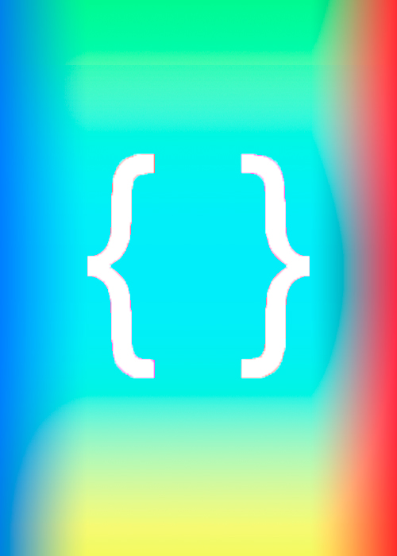
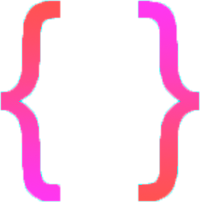
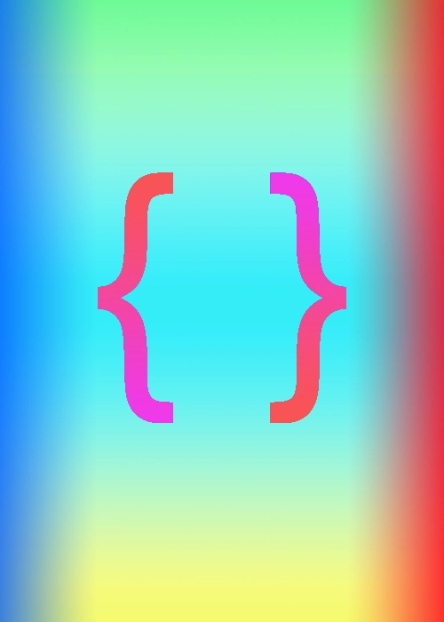

Оригинал
Размер - 148 кб

Вариант с вырезанием скобок и сохранении их в png, а фона в jpg и наложением их друг на друга при 100% сохранении качества
Размер - 122 кб


Вариант с использованием WebP
Размер при 100% сохранении качества - 19.3 кб
